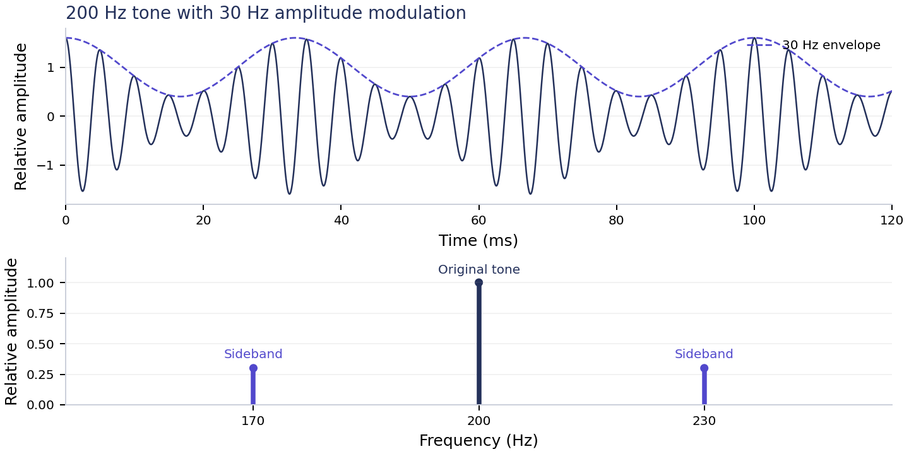

White paper / Research proposal
AUM Acoustic Modulation and the Question of Extra Dimensions
Could a sustained chant reshaped by rotating blades tell us something new about sound and our experience of reality?
Exploratory proposal. The possible connection to extra dimensions is a conjecture. The paper sets out what can be measured acoustically and what further evidence a broader claim would require. No experiment has yet been performed for this proposal.
The proposal
Abstract. This paper asks whether a sustained AUM chant, altered by rotating blades and airflow, could provide a useful starting point for investigating a possible connection to extra spatial dimensions. The motivating idea is speculative. No experiment has yet been performed for this proposal, and no evidence of such a connection is presented. The immediately testable part is the acoustic effect: how the recorded sound changes with fan speed, airflow and enclosure geometry.
The proposed programme begins with controlled, modest-volume recordings and comparisons against ordinary humming, pure tones and digitally modulated sound. A successful first study would characterise repeatable changes and establish how well standard acoustics explains them. An extra-dimensional interpretation would require a separate physical mechanism, quantitative predictions and independent evidence that these acoustic tests alone cannot supply.
Origin of the question
During meditation, I remembered speaking into a fan as a child and hearing my voice change. I wondered what would happen if I sustained AUM into a much larger moving-air system. Could the repeating interruption or reshaping of the sound reveal something about vibration and our experience of reality? If additional dimensions exist, could there be a physical connection worth investigating?
For me, AUM carries spiritual significance and invites reflection on the relationship between sound and life. That meaning motivates the question. The experimental proposal below addresses what instruments could measure, while leaving the broader spiritual interpretation open as a personal perspective.
Central proposition
Speculative proposition: if an additional physical degree of freedom exists and couples to matter or pressure fluctuations, a deliberately structured acoustic field might, in principle, influence or reveal that coupling. This paper does not establish either condition. It specifies the ordinary acoustic investigation that would have to come first.
Status: independent concept paper and proposed protocol; not peer reviewed. No experimental results, clinical benefits, communication with other realms or new physical mechanism are claimed.
What existing research establishes
Extra dimensions have a specific physical meaning
Everyday physics uses three spatial dimensions and time. Some physical theories propose additional spatial dimensions. CERN describes ways their effects might be sought through particle signatures and missing momentum in high-energy experiments [1]. A hypothetical extra spatial dimension is not automatically a parallel universe, a spiritual realm or a state of consciousness. These meanings need separate definitions.
The existence of an additional dimension would not by itself imply that audible sound can access it. A connection would require a defined interaction, an accessible scale and a measurable consequence. None is supplied by the analogy between vibration and the structure of reality.
AUM is a changing vocal sound
Voiced sound contains a fundamental frequency and harmonics; the vocal tract changes their relative strength [2]. For this protocol, AUM means a recorded progression through an open vowel, a rounded vowel and a closed-mouth hum. Actual pronunciation varies. There is no single pitch inherent in every AUM recording, so the experiment measures the source rather than assigning it a universal frequency.
Fans and enclosures alter sound
Related NASA engineering work studies acoustic transmission through a ducted fan [3]. A separate large-tunnel study measured sound pressure and structural vibration [4]. These provide context for blade scattering, machine noise and enclosure effects. Neither study tests AUM or a connection to extra dimensions. A household fan and a wind tunnel also differ in geometry, airflow and acoustic treatment, so scaling up does not guarantee a stronger version of the childhood effect.
Patterns and personal experience need separate interpretation
Harvard demonstrates how sand collects at relatively stationary nodes on a vibrating plate [5]. Such Chladni patterns show the behaviour of a resonating surface. Their symmetry is not evidence that sound has created life or opened another dimension.
A 2011 pilot fMRI study of 12 healthy volunteers compared OM chanting, an “ssss” task and rest. It reported reduced activity in several brain regions during OM relative to rest. Its proposed vagal explanation was preliminary, and relaxation remained a possible explanation [6]. This does not demonstrate extra-dimensional perception or a benefit from fan-modified chanting.
Search scope. Targeted searches for AUM or OM chanting combined with wind tunnels and fans did not locate a directly matching documented experiment. This was a targeted review, not a systematic review or proof that nobody has tried it. Sources were checked on 19 September 2026.
An ordinary acoustic model
Sound in air is a mechanical pressure disturbance. For a first approximation, a rotating fan can vary how much of the source sound is reflected or transmitted toward a microphone. This can produce periodic changes in the received amplitude. Moving blades can also change phase and frequency; airflow, turbulence and motor noise add further effects. The balance depends on placement and geometry.
For N equally spaced blades turning at R revolutions per minute, the blade-passage rate is:
f_b = N R / 60
A three-blade fan at 600 rpm has a blade-passage rate of 30 Hz. That is a timing calculation, not a prediction that every recording will contain one clean 30 Hz component. Blade shape, direct sound, reflections and the fan itself affect what is recorded.
A deliberately simplified amplitude-modulation model is:
y(t) = [1 + m cos(2 pi f_b t)] x(t)
Here x(t) is the original sound, y(t) is the altered sound and m is the modulation depth between 0 and 1. Multiplying a 200 Hz pure tone by a 30 Hz modulation envelope produces components at 170, 200 and 230 Hz. These extra components, called sidebands, follow directly from multiplying two periodic signals. They do not require new physics.

An AUM recording contains many changing components, so its spectrum will be more complex. A long enclosure can also favour certain frequencies. The model above is a useful baseline, not a complete model of any fan or tunnel. An engineering model would include propagation, reflections, scattering and measured noise.
Questions and evidence thresholds
Separate three questions
| Question | Operational test | What the result could establish |
|---|---|---|
| Acoustic change | Repeat identical source playback at measured fan speeds and compare spectra and timing. | A repeatable effect of the apparatus on recorded sound. |
| AUM specificity | Compare AUM with matched humming, vowels, tones and a synthetic harmonic sound. | Whether differences remain after specified acoustic features are controlled. |
| Extra-dimensional coupling | Requires a physical interaction model with a unique quantitative prediction. | Not established by the proposed audio experiment alone. |
Working hypotheses
H0, ordinary acoustics: observed differences are consistent with source variation, periodic scattering or modulation, airflow, room or duct resonance, fan noise and measurement uncertainty.
H1, unexplained acoustic residual: a specified measurement departs reproducibly from the preselected baseline model and its uncertainty. This would first indicate that the model or apparatus needs investigation. It would not identify an extra dimension as the cause.
Hextra, the broader conjecture: an additional spatial degree of freedom couples to the acoustic system. In its current form this has no specified coupling law, predicted signal size or distinctive signature. It therefore cannot yet be discriminated from other explanations by this experiment.
What would make the broader claim testable
A future model would have to specify what quantity couples to the proposed dimension, why the chosen frequencies and geometry matter, and a prediction that standard acoustics does not make. It must also describe an outcome that would count against the model. A new spectral line, strong bodily sensation, unusual pattern or unexplained microphone signal is insufficient on its own.
If “connection” means transferring information, the claim additionally needs a defined sender, receiver and channel, a concealed random message, a predeclared scoring rule and controls against ordinary information leakage. The present proposal supplies none of those mechanisms and should not be described as a communication experiment.
A null result would constrain effects detectable with the stated apparatus and settings. It would neither disprove all extra-dimensional theories nor settle the personal spiritual meaning of AUM.
A practical first experiment
Apparatus and source preparation
Use a loudspeaker, an intact guarded variable-speed household fan, a microphone on a stand, a recorder with manual gain and a non-contact tachometer if available. Start without a tunnel. Keep the microphone outside the direct air jet and record positions, distances, fan orientation and room layout. Use normal comfortable listening levels; do not remove guards or place the face, hair or loose material near the blades. Large wind-tunnel work belongs in an operated facility.
Make one 10-second AUM recording and reuse the identical file. Prepare a sustained hum and vowel near its median fundamental pitch, a pure tone at that pitch, and a synthetic harmonic signal with a broadly similar spectrum. Match playback RMS level and document duration and spectral differences. No single control can match every feature of a changing chant.
| Condition | Purpose |
|---|---|
| A Room only | Measure ambient and recorder noise with source and fan off. |
| B Source only | Establish each source spectrum with fan stationary in place. |
| C Fan only | Record fan sound at each selected speed without playback. |
| D Source plus fan | Measure the combined sound at the same speeds. |
| E Digital modulation | Replay a digitally modulated source with the fan off. |
| F Airflow without blades in the sound path | Later apparatus comparison using a remote blower and measured airflow. |
Condition F is optional in the household pilot. A remote-blower arrangement changes the acoustic path and has its own noise, so it needs a fresh source-only and blower-only baseline. It approximates an airflow comparison; it does not perfectly isolate one variable.
Repeatable acquisition
Choose three fan settings and measure rpm where possible. Capture at least five trials per source and setting in randomised order, over two sessions. Record source-only trials and fan-only trials throughout the sessions to reveal drift. Allow fan speed to stabilise. This is an engineering pilot, not a statistical power calculation for a new physical effect.
Use uncompressed WAV at 48 kHz and 24 bit where supported. Disable automatic gain, voice isolation and noise suppression; avoid clipping. Keep playback level, gain and geometry fixed. If only a phone is available, record its model and app and treat hidden processing as a limitation. Save unprocessed files, timestamps, source identifiers, rpm, temperature where available and notes for every trial.
Analysis and decisions
Declare the comparison before collecting data
For the pure-tone control, use source-referenced sideband power near f0 plus and minus the measured blade-passage rate as the primary acoustic outcome. Before the main run, define frequency windows using recorder resolution and measured speed variation. Report fan-only power in those windows and the distribution across repeated trials. Without a tachometer, predictions based only on low, medium and high settings are less precise.
For AUM, use fixed time windows corresponding to its vowel and humming portions. Compare spectra and amplitude envelopes within the same windows across conditions. Use identical analysis settings for all trials. A spectrogram with a 4096-sample Hann window and 75 percent overlap at 48 kHz is one reasonable starting point; its frequency-bin spacing is about 11.7 Hz, so it will not resolve every closely spaced feature. Longer windows improve frequency resolution at the expense of time resolution.
Treat lower sidebands, higher sidebands, harmonics and noise separately. Preserve level information in the primary analysis; normalised plots may be added for shape comparisons if clearly labelled. A separately recorded fan trace is generally not phase-aligned with the fan during source playback. Subtracting its waveform does not reliably remove fan noise. Use it to characterise background variability and investigate uncertain results.
Investigate residuals in a defined order
First check clipping, automatic processing, fan-speed drift, electrical pickup and microphone wind sensitivity. Next repeat at another microphone position and with a second recorder where possible. Compare the physical fan condition with digital modulation, then assess enclosure resonance and mechanical vibration. Test promising effects on a later day before revising the physical explanation.
Keep any listening or meditation study separate from the acoustic pilot. If people compare recordings, randomise labels and order, match listening levels, and record prior expectations. Ratings of calmness, intensity or felt connection describe experience; they do not identify the physical origin of that experience.
Decision after the pilot
If modulation and ordinary acoustics explain the recordings, publish that useful result with the limits of the model. If a residual survives checks, report its magnitude, uncertainty and all conditions, then seek independent replication and acoustic expertise. A larger tunnel is justified only by a specific measurement question that the smaller setup cannot answer.
Conclusion. The original intuition can become a careful investigation of sound, airflow and perception. The proposed work can test repeatable acoustic behaviour. A connection to extra dimensions remains a conjecture requiring its own mechanism and distinctive evidence; a compelling sound or meaningful meditation experience does not establish that connection.
References and publication notes
[1] CERN. Extra dimensions gravitons and tiny black holes. Institutional explanation of hypothetical extra dimensions and possible particle-physics tests. It provides no proposed connection through audible chanting.
Open source
[2] UNSW Music Acoustics. Voice Acoustics an introduction. Research-group explanation and demonstrations of vocal sound production, harmonics and the filtering action of the vocal tract.
Open source
[3] Ed Envia, NASA, 2016. Acoustic Power Transmission Through a Ducted Fan. Related engineering research on sound transmission through a rotating ducted fan. This is not an experiment with AUM or extra dimensions.
Open source
[4] NASA, 1974. Acoustic measurement study 40 by 80 foot subsonic wind tunnel. Report NASA-CR-137573 describes measurements of sound pressure and structural vibration in and around a large wind tunnel.
Open source
[5] Harvard Natural Sciences Lecture Demonstrations. Chladni Plates. Demonstration of sand accumulating at the nodes of a vibrating plate.
Open source
[6] Kalyani BG and colleagues, 2011. Neurohemodynamic correlates of OM chanting. International Journal of Yoga 4(1), 3-6. doi:10.4103/0973-6131.78171. Pilot fMRI study with 12 healthy volunteers.
Open source
Author and scope
Michael Harvey, Know & Guide. Original concept from a meditation reflection and childhood experience of speaking into a fan. Research synthesis, drafting and formatting prepared with AI assistance. Author attribution identifies the originator of the proposal; it does not imply institutional affiliation or specialist validation.
Version 1.0, 19 September 2026. The equations and plotted example are illustrative calculations. No data were collected for this paper. This document is a research proposal, not a report of demonstrated extra-dimensional contact.
Published page: knowandguide.com/blog/aum-acoustic-modulation-extra-dimensions.html